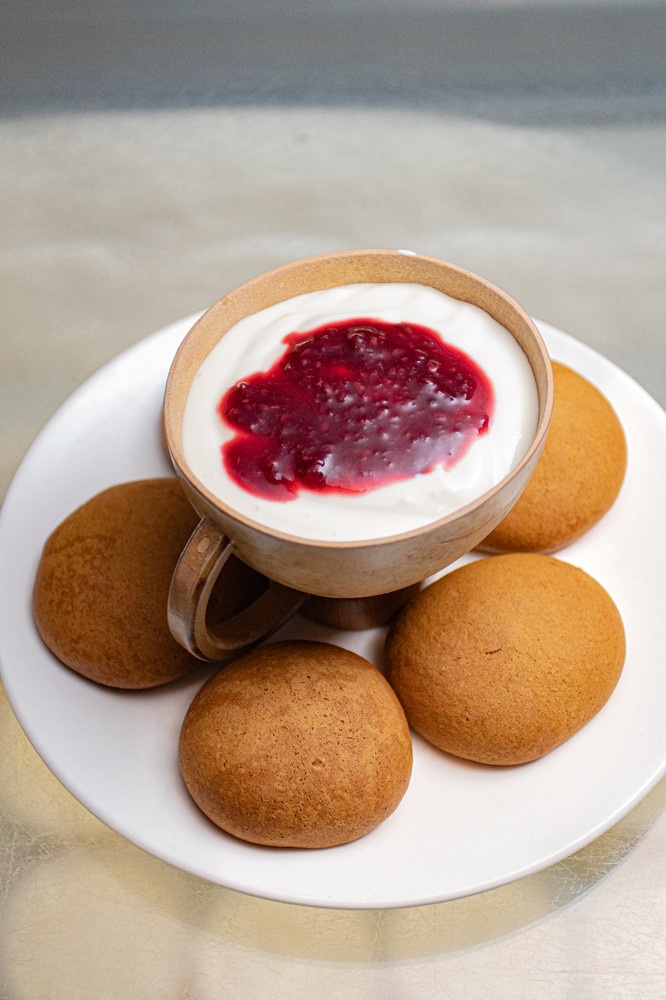
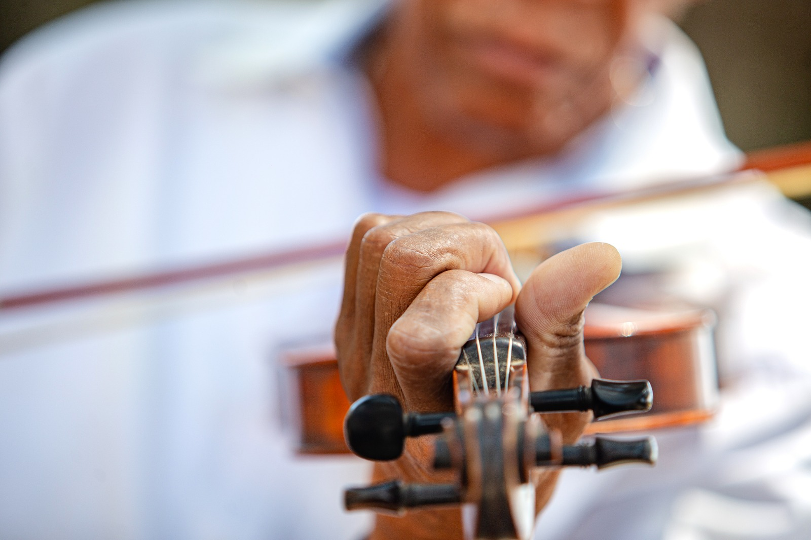
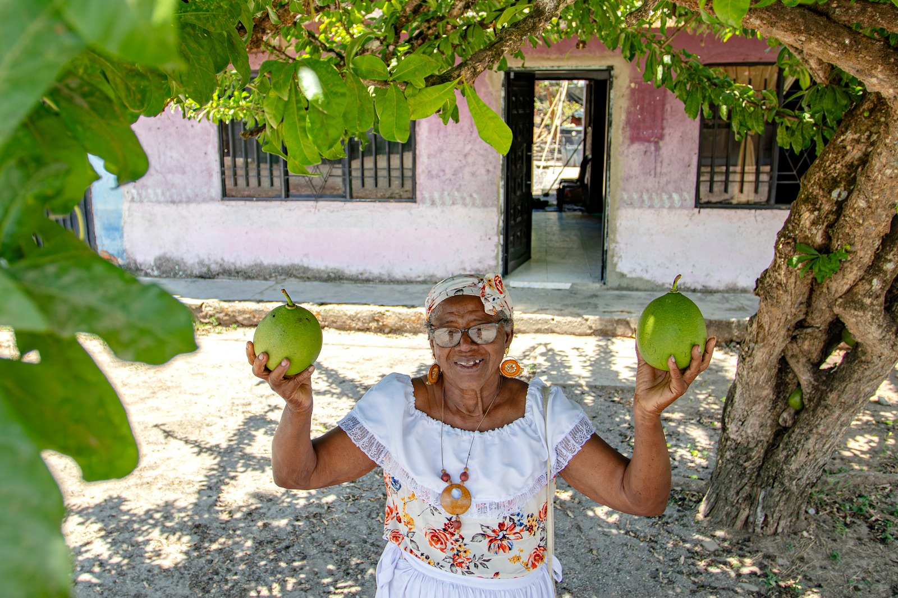
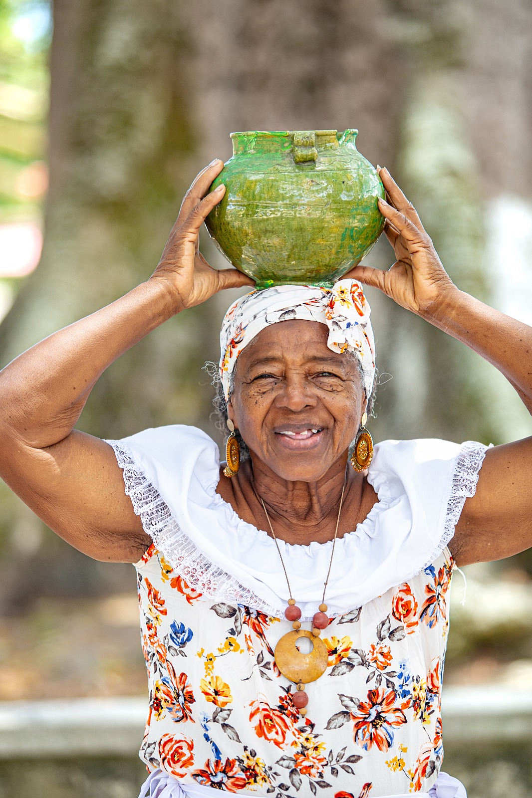

01 / ARTESANÍA
01 / ARTESANÍA
El arte del totumo
Conoce cómo este fruto se transforma en recipientes, utensilios, instrumentos y otras piezas que reflejan los saberes de los artesanos del territorio.
Explorar la artesanía ↗HAY LUGARES QUE MERECEN SER DESCUBIERTOS
Una invitación a explorar destinos y conocer las historias que dan identidad a cada territorio. Comienza por Patía y descubre la Ruta del Totumo, sus saberes artesanales y su riqueza cultural.
Descubrir Patía ↓UN TERRITORIO CON HISTORIA
En Patía, Cauca, la Ruta del Totumo invita a acercarse a los oficios artesanales, la música, la gastronomía y las expresiones culturales que forman parte de la identidad del territorio.
Conocer las experiencias ↗
PATÍA, CAUCA · COLOMBIAEL CORAZÓN DEL RECORRIDO
Oficios, música y sabores que permiten descubrir distintas facetas de la experiencia turística en Patía.
01 / ARTESANÍA
Conoce cómo este fruto se transforma en recipientes, utensilios, instrumentos y otras piezas que reflejan los saberes de los artesanos del territorio.
Explorar la artesanía ↗
02 / MÚSICAAcércate a la historia del bambuco patiano, el violín y las danzas que mantienen vivas las expresiones culturales de la comunidad.
Descubrir la cultura ↗
03 / GASTRONOMÍASabores, preparaciones y encuentros que también cuentan la historia de Patía. La cocina local acompaña el recorrido y conserva recuerdos que pasan de una generación a otra.
Descubrir los sabores ↗ 04 / TERRITORIO
04 / TERRITORIO
El puente de Galíndez invita a descubrir los paisajes, los caminos y los lugares que forman parte de la memoria y la vida cotidiana de Patía.
Explorar el territorio ↗EL RECORRIDO
Cada preparación guarda algo más que un sabor: reúne ingredientes, costumbres y recuerdos compartidos. En la Ruta del Totumo, la gastronomía también es una forma de acercarse a la identidad patiana.
Descubrir los sabores locales ↗POSTALES DEL TERRITORIO
Conoce a las personas, los saberes y los paisajes que hacen única la Ruta del Totumo.

01 / IDENTIDADRAÍCES QUE NOS DEFINEN
En cada rostro, gesto y celebración permanece la memoria de Patía. Las tradiciones siguen presentes en la forma de reunirse, compartir y reconocerse como comunidad.
Fotografías: Julián Moreno.
MÁS ALLÁ DE LAS PALABRAS
Una mirada audiovisual a la experiencia turística y a las tradiciones que hacen especial este recorrido por Patía.
Material audiovisual de la Gobernación del Cauca Secretaria de Desarrollo Económico y Competitividad Componente de turismo
Material: Aurora Angulo ValenciaRUMBO · CAUCA, COLOMBIA